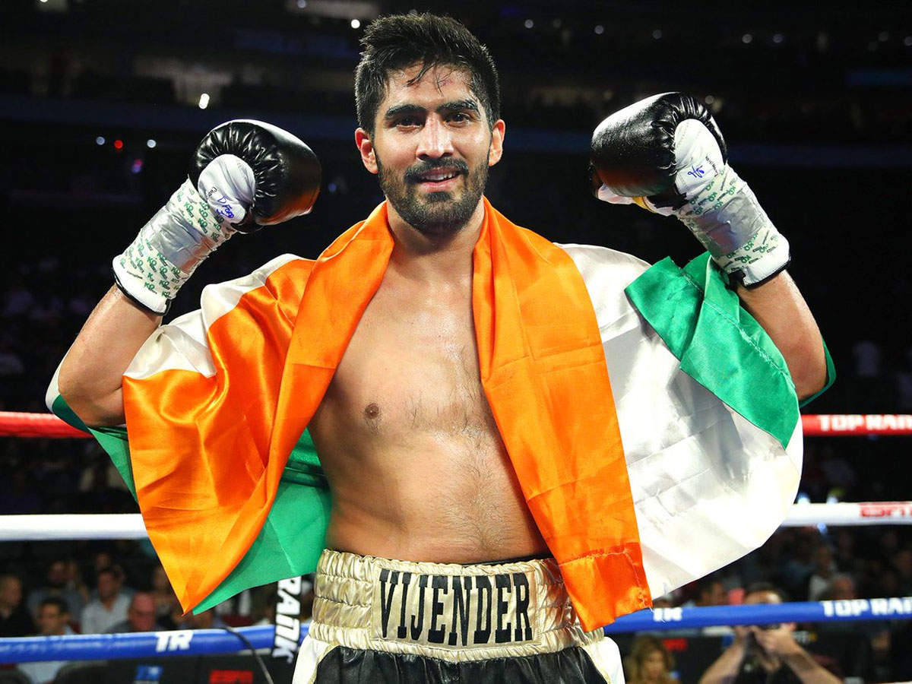
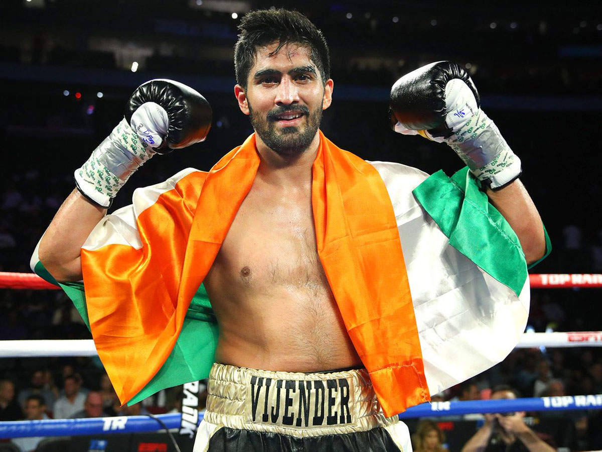

Famous Personalities

P. V. Sindhu

Mary Kom

Vinesh Phogat
Usain Bolt
Early Life and Start in Athletics:
Usain Bolt was born on August 21, 1986, in Sherwood Content, Jamaica. From a young age, he showed athletic promise, excelling in sports like cricket and football. His sprinting talent was noticed in high school, and by 15, Bolt won a gold medal in the 200 meters at the 2002 World Junior Championships in Kingston, Jamaica. This marked the beginning of his rise to international fame.
Breakthrough at the 2008 Olympics:
Bolt’s global breakthrough came at the 2008 Beijing Olympics. He won gold in both the 100 meters and 200 meters, breaking world records in both events with times of 9.69 seconds and 19.30 seconds, respectively. His celebratory style and dominance made him a global sensation.
London and Rio Olympics Glory:
Bolt continued his Olympic success in London 2012, defending his 100 meters and 200 meters titles, and setting a new world record in the 4x100 meters relay. In Rio 2016, he completed an unprecedented "triple-triple," winning gold in the 100 meters, 200 meters, and 4x100 meters relay for the third straight Olympics.
World Championships Success:
In addition to his Olympic victories, Bolt excelled at the World Championships, winning 11 gold medals. His 2009 performances in Berlin, where he set world records in the 100 meters (9.58 seconds) and 200 meters (19.19 seconds), are among the greatest in history.
Retirement and Legacy:
Bolt retired in 2017 after the World Championships, where he finished third in the 100 meters. His impact on athletics is unmatched, with his world records still standing. Beyond sports, his charismatic personality and influence have inspired a generation of athletes, solidifying his legacy as one of the greatest sprinters of all time.
P. V. Sindhu
Early Life and Start in Badminton:
P. V. Sindhu was born on July 5, 1995, in Hyderabad, India. She began playing badminton at a young age, inspired by the success of Pullela Gopichand, a former All England Open Badminton Champion. Under the guidance of Gopichand, Sindhu quickly rose through the ranks of Indian and international badminton.
Olympic Success in 2016:
Sindhu gained global attention during the 2016 Rio Olympics, where she became the first Indian woman to win a silver medal in badminton. Her intense final against Spain's Carolina Marín was one of the highlights of the tournament, establishing her as one of the top players worldwide.
Continued International Success:
After her Olympic success, Sindhu continued performing well in international tournaments. She won multiple World Championship medals, including a gold in 2019, becoming the first Indian to achieve this feat. Sindhu also won several Super Series titles, solidifying her position among the world's top badminton players.
Tokyo Olympics 2020:
At the 2020 Tokyo Olympics, Sindhu added a bronze medal, making her the first Indian woman to win two Olympic medals in badminton. This achievement further solidified her status as one of India’s most successful athletes.
Legacy and Impact:
Sindhu's achievements have inspired a new generation of badminton players in India. Her disciplined approach, combined with her global successes, has made her a role model for young athletes across the country. She continues to compete at the highest level, aiming for more victories.
Michael Phelps
Early Life and Introduction to Swimming:
Michael Phelps was born on June 30, 1985, in Baltimore, Maryland, USA. He began swimming at seven and made his Olympic debut at 15 at the 2000 Sydney Olympics. Although he did not win any medals in Sydney, his potential as a future swimming great was evident.
Olympic Dominance in 2004:
Phelps' breakthrough came at the 2004 Athens Olympics, where he won six gold and two bronze medals. His versatility in different swimming strokes and distances was unmatched, and he became a global swimming sensation.
Beijing 2008: Record-breaking Feat:
At the 2008 Beijing Olympics, Phelps made history by winning eight gold medals, breaking the record for the most golds in a single Olympics. His dominance in both individual and relay events cemented his status as the greatest swimmer of all time.
London and Rio Olympics:
Phelps added four more golds and two silvers at the 2012 London Olympics. After briefly retiring, he returned to the 2016 Rio Olympics, winning five more golds and a silver, bringing his career total to 23 Olympic golds and 28 medals overall.
Legacy and Post-Retirement:
Phelps retired as the most decorated Olympian ever. Beyond his accomplishments, he has become a mental health advocate, sharing his struggles with depression and supporting mental wellness for athletes globally.
Abhinav Bindra
Early Life and Entry into Shooting:
Abhinav Bindra was born on September 28, 1982, in Dehradun, India. His shooting talent was evident from a young age, and he went on to train under expert guidance. By 18, he had already competed in his first Olympics at Sydney 2000.
Olympic Gold in 2008:
Bindra made history at the 2008 Beijing Olympics by winning gold in the 10-meter air rifle event, becoming the first Indian individual athlete to win an Olympic gold medal. His achievement brought recognition to Indian shooting on the global stage.
World Championships and Other Achievements:
Bindra’s Olympic gold was the pinnacle of a career that included multiple World Championship medals and successes at the Commonwealth and Asian Games. His consistent performances over two decades made him one of India's finest athletes.
Retirement and Contributions to Sports:
After retiring from competitive shooting, Bindra focused on promoting sports development in India. His foundation works to improve the infrastructure for Olympic sports, aiming to inspire the next generation of Indian athletes.
Legacy:
Abhinav Bindra’s Olympic triumph remains a significant milestone in Indian sports history. His success paved the way for future Indian athletes to pursue excellence at the Olympic level.
Early Life and Athletic Beginnings:
Carl Lewis was born on July 1, 1961, in Birmingham, Alabama, USA. He initially showed interest in long jump and sprinting and quickly established himself as a dominant force in track and field during his high school and college years.
Olympic Success in 1984:
At the 1984 Los Angeles Olympics, Lewis won four gold medals in the 100 meters, 200 meters, long jump, and 4x100 meters relay. His remarkable versatility and dominance drew comparisons to the legendary Jesse Owens.
Continued Olympic Success:
Lewis continued to win Olympic medals in the 1988 Seoul, 1992 Barcelona, and 1996 Atlanta Games. He secured a total of nine Olympic golds across four Olympic Games, including four consecutive long jump golds, making him one of the most decorated athletes in Olympic history.
World Championships Glory:
Lewis was equally successful at the World Championships, winning eight golds and one silver. His ability to dominate both sprints and long jump was unparalleled.
Legacy and Impact:
Carl Lewis is regarded as one of the greatest track and field athletes of all time. His records, achievements, and sportsmanship left a lasting legacy, influencing future generations of sprinters and jumpers.
Mary Kom
Early Life and Introduction to Boxing:
Mary Kom, born on November 24, 1982, in Manipur, India, grew up in a farming family. Her interest in boxing was sparked by the success of fellow Manipuri boxer Dingko Singh. Despite opposition from her family, Kom pursued boxing, training under coach M. Narjit Singh, and quickly rose through the ranks of Indian boxing.
International Breakthrough:
Mary Kom’s international breakthrough came in 2002 when she won a silver medal at the World Women's Boxing Championship. She followed this with a gold at the 2003 championship, marking her arrival as one of the world’s top female boxers. She continued to dominate the flyweight division in the years that followed.
Olympic Success in 2012:
In 2012, women’s boxing was introduced at the Olympics, and Mary Kom represented India in the 51 kg category. She won a bronze medal, becoming the first Indian female boxer to win an Olympic medal. Her resilience and skill made her a national icon.
World Championships and Other Achievements:
Throughout her career, Kom has won a record six World Championship titles. She also won gold at the Asian Games and Commonwealth Games, proving her longevity and consistency at the highest level of boxing.
Legacy and Impact:
Mary Kom’s achievements have paved the way for female athletes in India, particularly in combat sports. Her story of perseverance has inspired millions. Despite her age, she continues to compete, and her impact on Indian sports is immeasurable.
Simone Biles
Early Life and Start in Gymnastics:
Simone Biles was born on March 14, 1997, in Columbus, Ohio, USA. She started gymnastics at a young age and quickly gained recognition for her exceptional talent. Biles began her elite gymnastics career in 2013, winning her first World Championship titles and establishing herself as one of the sport’s rising stars.
Breakthrough at the 2016 Rio Olympics:
Biles made her Olympic debut at the 2016 Rio Olympics, where she won four gold medals and one bronze. She dominated the gymnastics competition, excelling in the all-around, vault, floor, and team events, showcasing her remarkable strength, technique, and artistry.
World Championships Dominance:
In addition to her Olympic success, Biles has dominated the World Championships, winning a record 25 World Championship medals, including 19 golds. Her routines are known for their difficulty, with several gymnastics elements named after her due to their complexity.
Tokyo 2020 Olympics:
At the 2020 Tokyo Olympics, Biles faced mental health challenges, which led her to withdraw from most events. Despite this, she won a bronze medal on the balance beam, demonstrating her resilience and ability to prioritize mental well-being. Her decision to speak openly about mental health brought the issue to the forefront in sports.
Legacy and Impact:
Simone Biles is considered one of the greatest gymnasts of all time. Her impact extends beyond her medals, as she has become a strong advocate for athletes’ mental health. Her influence on gymnastics, combined with her advocacy, makes her a trailblazer in the world of sports.
Neeraj Chopra: India's Javelin Throwing Sensation
Early Life and Career Beginnings:
Neeraj Chopra, a rising star in the world of athletics, hails from Panipat, Haryana, India. Born in 1997, Chopra's journey to Olympic glory began at a young age. His natural athleticism and talent for javelin throwing were evident from the start, and he quickly emerged as a promising athlete.
Domestic Dominance and International Recognition:
Chopra's dominance in domestic competitions was undeniable, and he soon made a name for himself on the international stage. He represented India at various international tournaments, consistently showcasing his exceptional skills. His impressive performances earned him accolades and recognition from the sporting world.
Olympic Breakthrough and Historic Gold:
The year 2021 marked a significant milestone in Chopra's career. At the Tokyo Olympics, he made history by becoming the first Indian athlete to win an Olympic gold medal in javelin throw. His historic throw of 87.58 meters not only secured him the top spot but also shattered the Asian record. This victory was a momentous occasion for Indian sports, and Chopra became a national hero overnight.
World Athletics Championships Glory:
Following his Olympic triumph, Chopra continued to excel on the international stage. In 2022, he clinched the gold medal at the World Athletics Championships, solidifying his position as one of the world's leading javelin throwers. This victory added another feather to his cap and further cemented his reputation as a global sporting icon.
Inspiring Future Generations:
Chopra's achievements have inspired countless young athletes in India to pursue their dreams in sports. His success has ignited a passion for athletics and javelin throwing among the youth, and he has become a role model for many aspiring athletes. As Chopra continues to break records and achieve new heights, his legacy will undoubtedly inspire future generations of Indian athletes.
Jesse Owens: The Olympic Legend
Early Life and Career Beginnings:
Jesse Owens, a legendary American track and field athlete, was born in Decatur, Alabama, in 1913. His athletic talents were evident from a young age, and he quickly excelled in various sports. Owens's most notable achievements came in track and field, where he dominated the sprint and long jump events.
Olympic Dominance and Historic Triumph:
Owens's greatest moment came at the 1936 Berlin Olympics. Despite the prevailing political climate of the time, Owens defied expectations and delivered a stunning performance. He won four gold medals in the 100 meters, 200 meters, long jump, and 4x100 meter relay. His victories were a significant blow to Adolf Hitler's propaganda machine, which sought to promote Aryan supremacy.
Breaking World Records and Athletic Excellence:
Owens's Olympic triumph was just one highlight of his illustrious career. He held world records in multiple events, including the 100 meters, 200 meters, and long jump. His athletic prowess and speed earned him the nickname "The Buckeye Bullet."
Post-Olympic Career and Legacy:
After his Olympic success, Owens continued to compete and achieve remarkable feats. He remained an active athlete for many years, inspiring countless others with his talent and determination. Owens's legacy extends far beyond his athletic accomplishments. He became a symbol of hope and resilience, demonstrating that human spirit can triumph over adversity.
Saina Nehwal: India's Badminton Queen
Early Life and Career Beginnings:
Saina Nehwal, a renowned Indian badminton player, was born in Hisar, Haryana, in 1988. Her passion for badminton began at a young age, and she quickly displayed exceptional talent. Nehwal's dedication and hard work led her to become one of India's most prominent athletes.
Domestic and International Success:
Nehwal's domestic dominance was evident from an early age, and she soon made a name for herself on the international stage. She represented India at numerous tournaments, consistently achieving impressive results. Nehwal's breakthrough came in 2009 when she became the first Indian woman to reach the quarterfinals of the World Badminton Championships.
Olympic Medalist and World No. 1:
Nehwal's greatest achievement came at the London 2012 Olympics, where she won a bronze medal in women's singles badminton. This historic victory marked a significant milestone for Indian badminton, and Nehwal became a national hero. In 2015, Nehwal reached the pinnacle of her career by becoming the world No. 1 in women's singles badminton.
Inspiring Future Generations:
Nehwal's success has inspired countless young athletes in India to pursue their dreams in badminton. Her dedication, hard work, and perseverance have made her a role model for many aspiring athletes. As Nehwal continues to contribute to Indian badminton, her legacy will undoubtedly inspire future generations.
Nadia Comăneci: The Perfect Ten
Early Life and Career Beginnings:
Nadia Comăneci, a Romanian gymnast, was born in Onesti in 1961. Her exceptional talent and athleticism were evident from a young age. Comăneci's dedication to gymnastics led her to become one of the greatest athletes of all time.
Olympic Dominance and Historic Achievement:
Comăneci's greatest moment came at the 1976 Montreal Olympics. She became the first gymnast in history to score a perfect 10 in an Olympic competition. This historic achievement was a testament to her extraordinary skills and technical prowess. Comăneci went on to win five gold medals at the Montreal Olympics, cementing her status as one of the greatest gymnasts of all time.
Post-Olympic Career and Legacy:
After her Olympic triumphs, Comăneci continued to be involved in gymnastics. She served as a coach and judge, sharing her expertise with younger generations. Comăneci's legacy extends far beyond her athletic achievements. She became a symbol of hope and inspiration, demonstrating the power of human potential.
Milkha Singh: The Flying Sikh
Early Life and Career Beginnings:
Milkha Singh, a legendary Indian sprinter, was born in Punjab in 1932. His life was marked by adversity, as he faced poverty and the loss of his family during the Partition of India. Despite these challenges, Singh's determination and athletic talent led him to become one of India's most celebrated athletes.
Domestic and International Success:
Singh's domestic dominance was evident from an early age. He won numerous national championships and represented India at various international tournaments. His greatest achievement came at the 1958 Commonwealth Games, where he won gold medals in the 440 yards and 1 mile races. Singh's exceptional speed earned him the nickname "The Flying Sikh."
Olympic Representation and Legacy:
Singh represented India at the 1956 and 1960 Olympics. While he did not win an Olympic medal, his performances were a source of pride for the nation. Singh's legacy extends far beyond his athletic achievements. He became a symbol of hope and inspiration, demonstrating the power of human spirit to overcome adversity.
Larisa Latynina: The Queen of Gymnastics
Early Life and Career Beginnings:
Larisa Latynina, a Soviet gymnast, was born in Kherson in 1938. Her exceptional talent and athleticism were evident from a young age. Latynina's dedication to gymnastics led her to become one of the greatest athletes of all time.
Olympic Dominance and Record-Breaking Achievements:
Latynina's greatest achievements came at the Olympic Games. She participated in four Olympics (1956, 1960, 1964, and 1968), winning a total of 18 medals, including nine golds. Latynina holds the record for the most Olympic medals won by a female athlete. Her dominance in gymnastics was unparalleled.
Post-Olympic Career and Legacy:
After her Olympic career, Latynina continued to be involved in gymnastics. She served as a coach and judge, sharing her expertise with younger generations. Latynina's legacy extends far beyond her athletic achievements. She became a symbol of strength and determination, inspiring countless athletes around the world.
Deepika Kumari: India's Archery Queen
Early Life and Career Beginnings:
Deepika Kumari, an Indian archer, was born in Ranchi, Jharkhand, in 1994. Her passion for archery began at a young age, and she quickly displayed exceptional talent. Kumari's dedication and hard work led her to become one of India's most prominent athletes.
Domestic and International Success:
Kumari's domestic dominance was evident from an early age, and she soon made a name for herself on the international stage. She represented India at numerous tournaments, consistently achieving impressive results. Kumari's breakthrough came in 2010 when she became the world No. 1 in women's recurve archery.
Olympic Representation and Legacy:
Kumari has represented India at multiple Olympics, including the 2012 London Olympics and the 2020 Tokyo Olympics. While she has yet to win an Olympic medal, her consistent performances have made her a respected figure in the world of archery. Kumari's legacy extends beyond her athletic achievements. She has become a role model for young athletes in India, inspiring them to pursue their dreams.
Mo Farah: The British Distance Running Legend
Early Life and Career Beginnings:
Mo Farah, a British long-distance runner, was born in Somalia in 1983. His family emigrated to the United Kingdom when he was young. Farah's athletic talents were evident from an early age, and he excelled in both cross-country and track running.
Domestic and International Success:
Farah's domestic dominance was undeniable, and he soon made a name for himself on the international stage. He represented Great Britain at numerous tournaments, consistently achieving impressive results. Farah's breakthrough came in 2011 when he won the 5000 meters and 10000 meters titles at the World Championships.
Olympic Dominance and Double Gold:
Farah's greatest achievements came at the Olympic Games. He won the 5000 meters and 10000 meters gold medals at both the 2012 London Olympics and the 2016 Rio de Janeiro Olympics. This unprecedented "double-double" solidified Farah's status as one of the greatest distance runners of all time.
Post-Olympic Career and Legacy:
After his Olympic triumphs, Farah continued to compete at a high level. He remained a dominant force in long-distance running, winning multiple world championships and breaking world records. Farah's legacy extends far beyond his athletic achievements. He has become a symbol of inspiration, demonstrating the power of human spirit and the importance of perseverance.
Vinesh Phogat: India's Wrestling Icon
Early Life and Wrestling Family:
Vinesh Phogat was born on August 25, 1994, in Balali, Haryana, India. She hails from the famous Phogat family, known for producing elite wrestlers. Inspired by her cousins, Geeta and Babita Phogat, Vinesh started training at a young age under her uncle, Mahavir Singh Phogat.
International Breakthrough:
Vinesh's international career took off when she won the bronze medal at the 2013 Asian Wrestling Championships. She continued to rise, winning a gold medal at the 2014 Commonwealth Games in the 48 kg category, which cemented her status as one of India's top wrestlers.
Setbacks and Comeback:
Vinesh Phogat faced a major setback during the 2016 Rio Olympics, where a knee injury forced her out of the competition. However, she made a remarkable comeback, winning gold at the 2018 Commonwealth Games and Asian Games, becoming the first Indian woman to do so in wrestling.
Legacy and Impact:
Vinesh Phogat's journey has been one of resilience and perseverance. She has become a symbol of determination, inspiring women across India to pursue wrestling and sports. Her continued success on the mat, combined with her fighting spirit, has earned her numerous accolades and respect as one of India's greatest athletes.
Avani Lekhara: India's Paralympic Shooting Champion
Early Life and Tragic Accident:
Avani Lekhara was born on November 8, 2001, in Jaipur, Rajasthan, India. Her life took a drastic turn when she was involved in a car accident at the age of 11, which left her paralyzed from the waist down. Despite this, Avani's determination to succeed led her to pursue sports, eventually focusing on shooting.
Introduction to Shooting:
Avani started shooting in 2015, inspired by former Olympic champion Abhinav Bindra. Her hard work and focus led her to rise quickly in the sport, and she competed in national and international events, steadily improving her performance.
Paralympic Glory:
Avani Lekhara made history at the 2020 Tokyo Paralympics (held in 2021) by becoming the first Indian woman to win a Paralympic gold medal in shooting. She achieved this in the 10m air rifle standing SH1 event. She also won a bronze in the 50m rifle 3 positions SH1 event, becoming a double medalist at her debut Paralympic Games.
Legacy and Inspiration:
Avani Lekhara's achievements have inspired countless people, not only in India but worldwide. She has shown that physical limitations do not define one's potential, and her journey from tragedy to triumph is a symbol of resilience and courage. Her Paralympic success has put her on the map as one of India's finest athletes.
Navdeep Singh: India's Para Javelin Throw Champion
Early Life and Introduction to Sports:
Navdeep Singh was born in 1996 in Haryana, India. From a young age, Navdeep showed an interest in athletics. Despite physical challenges, he was determined to pursue sports and found his passion in javelin throw, where he quickly excelled.
Rise to National and International Success:
Navdeep Singh's hard work paid off as he began competing in para-athletics events. His national-level performances earned him a spot on the Indian para-athletics team, and he started making a name for himself on the international stage with consistent performances.
Paralympic Achievements:
At the 2020 Tokyo Paralympics (held in 2021), Navdeep Singh competed in the javelin throw F41 category. His impressive throws helped him finish among the top athletes, making him a symbol of India's emerging dominance in para-athletics. Although he missed a medal, his performance was celebrated across the nation.
Legacy and Impact:
Navdeep Singh's journey has inspired many young athletes with disabilities to take up sports. His determination and perseverance have made him a role model for the para-sports community in India. His achievements continue to inspire others to overcome challenges and strive for excellence in their fields.
Dharambir: India's Club Throw Champion
Early Life and Journey into Para Athletics:
Dharambir, born in Haryana, India, faced numerous challenges throughout his life due to his physical disabilities. However, his passion for sports never wavered, and he eventually found his calling in para-athletics, particularly excelling in the club throw event.
Success at the National and International Level:
Dharambir worked tirelessly to perfect his technique in the club throw. His dedication and hard work paid off as he quickly rose through the ranks, becoming one of India's top para-athletes in the F51 category. He showcased his talent at various national and international competitions, consistently winning medals.
Gold Medal at the 2024 Paris Paralympics:
Dharambir's crowning achievement came at the 2024 Paris Paralympics, where he won the gold medal in the Men's Club Throw F51 category. His performance not only earned him the top spot but also set a new Asian record with a throw of 34.92 meters. This victory further solidified his status as one of India's premier para-athletes.
Inspiring Legacy:
Dharambir's journey from adversity to becoming a Paralympic gold medalist is an inspiration to millions. His determination, resilience, and unwavering spirit have made him a role model for aspiring para-athletes across India. Dharambir's legacy will continue to inspire future generations to pursue their dreams despite the challenges they may face.

 



Reviews